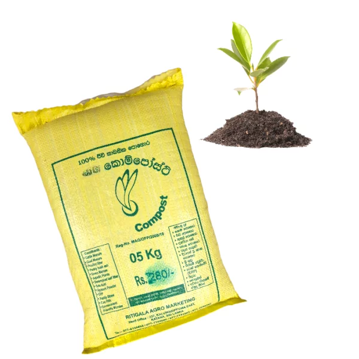

Top Products
Sri Lankan Coconut Sugar
A natural, healthy sweetener from coconut sap with a caramel-like taste, low glycemic index, used in many dishes in Sri Lanka.

Sri Lankan Mango Plant
A unique mango variety native to Sri Lanka, celebrated for its exceptional flavor and fragrance.

Sri Lankan Corn Seeds
Special corn seeds originating from Sri Lanka, prized for their distinct characteristics and suitability for local agriculture.

Ritigala Compost 5kg
5KG bag of Ritigala Compost, a high-quality organic fertilizer. Enrich your soil and provide essential nutrients to your plants with this organic fertilizer.
Sri Lankan Bean Seeds
Distinctive bean seeds cultivated in Sri Lanka, known for their unique qualities and suitability for local growing conditions
Sri Lankan Cardamom Plant
A sought-after cardamom variety native to Sri Lanka, prized for its exceptional aroma and flavor profile.